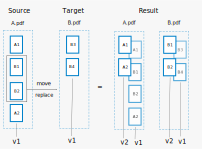
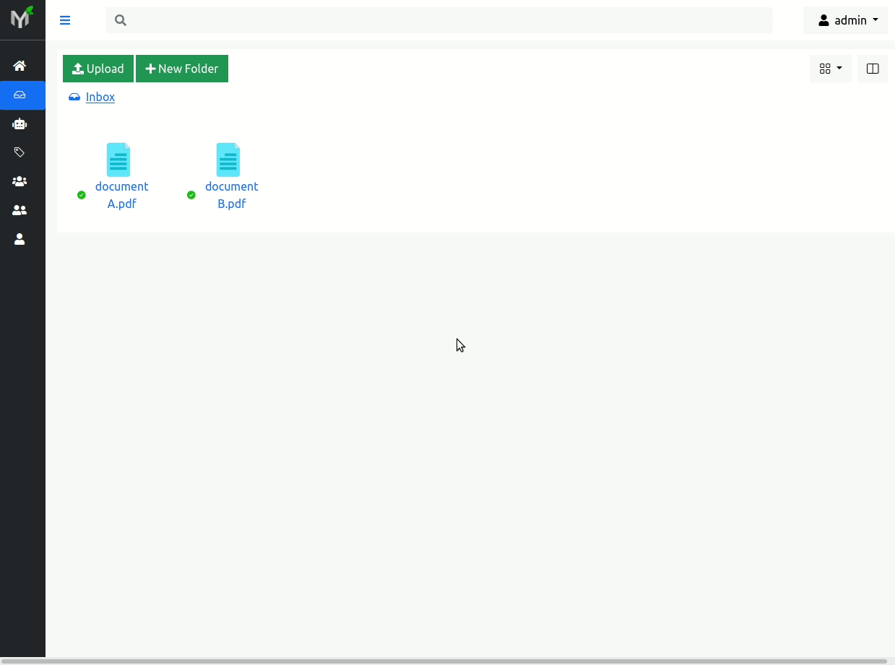
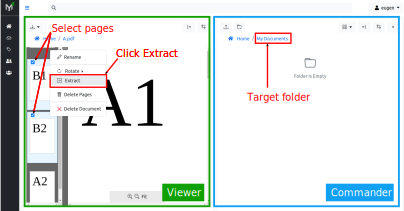

Page Management
Many times scanning documents in bulk results in documents with blank pages; some pages maybe out of order or maybe part of totally different document. Even if you notice these problems immediately it is time consuming to redo scanning process. Wouldn't it be nice to fix out of order pages without scanning all docs again?
Page management is set of features which helps to fix scanning process errors. In other words you can delete, reorder, rotate, and extract pages within document(s).
Every time one of the operations described in this section is applied - a new document version is created. Because of this, the changes you apply on the document like rotate, delete, extract, reorder, do not destroy the document, in other words page management is non-destructive process.
Note
In order perform any of operations described below (delete, reorder, rotate or extract) you need to have Change Permission on respective document. You have automatically granted Change Permission on the documents you uploaded (because you own the documents uploaded by you).
Delete
You can delete specific pages (for instance blank pages) from the document. Although many scanners have automatic "remove blank pages" feature, many times they get confused of what a blank page is. In case your scans end up with undesired blank pages you can easily remove those pages.

In order to delete a page, you need to select desired page by clicking on it,
then Right Click--> Delete Page.
Every time you delete one or several pages, document version is incremented by one. For instance if document Invoice-X56.pdf currently has four pages and the document latest version is version 1, then, after deleting one page - document latest version will be 2. Thus document's version 1 has all four pages and document version 2 has three pages:

Reorder
Out of order pages occur very often during scanning process. Papermerge DMS empowers users to change pages order within the document.
For instance, in figure below you can see that pages 2 and 4 are out of place. To correct pages' order use drag 'n drop. For example grab page 2 and drop it in correct position, and then do same thing with page 3:

For these changes to take effect you need to click 'Apply Changes' button.
Warning
Document pages reorder will only be saved when you click 'Apply Changes'

Similarly to deleting pages, every time you save new pages order, document version will be incremented (i.e. advanced by one).

Rotate
Often scanned pages are upside down or maybe rotated 90° (degrees). In order to
quickly fix that, select one or multiple pages you want to rotate and then
Right Click --> Rotate --> 180° CCW (or 90°
CW, 90° CCW depending on your specific case):

Note
CW stand for clockwise. CCW stands for counter-clockwise.
Similarly to page deletion and page ordering, every time you rotate a page, document version will be incremented (i.e. advanced by one).
Warning
After page rotation you have to re-run OCR for the document. It is because if page was upside down when ingested, the OCR operation won't make sense of it and thus won't be able to extract text (and then index) from that page. After you have manually fixed the page (by correctly rotating it) - OCR will be able to extract and index page's contented.
Move (Document to Document)
You can move one, multiple or even all strayed pages from one document (source) to another (target). If you choose to move all documents from the source - the source will be deleted, because it does not make sense to have "document with zero pages".
When moving pages between documents you will be prompted to choose between two different move strategies:
- Replace target
- Append to target
The outcome between replace vs append strategies is illustrated below:

The difference is outcome of the B.pdf (target). With replace strategy, the document B.pdf ended up having two pages (which replaced previous ones), while with append strategy the document B.pdf ended up with four pages as source pages were appened to the existing ones.
Note
What happens if you select all source pages, i.e. when you
select A1, B1, B2, A2? In such case - source document (A.pdf) will be deleted, because it does not make any sense to have a document with zero pages. For the target document (B.pdf) this case does not make any difference, as the outcome is always the same.
Note
Use case when you select all pages and chose "replace strategy" has same outcome as merging documents.
Now, that "theory" is clear, let's move on to the practical part and see Papermerge DMS in action. First of all, note that in Papermerge DMS you can move pages between documents either using context menu or by using drag 'n drop.
Tip
You can also move pages between documents with REST API as well
Use Context Menu
In order to move pages between documents, using context menu:
- Make sure both documents are open in left and right panels
- Select pages you want to move in :ref:
thumbnails panel <Thumbnails_Panel>of the source document viewer - Use right click to open context menu in source document viewer
- Choose "Move" context menu item
Context menu is dynamic - which means it renders only relevant menu items. If
for example you have in one panel opened :ref:document viewer <Viewer> while other panel is
in :ref:commander mode <Commander>, then "there will be "extract" menu item instead of "move".
In other words, "move" menu item will be visible only if:
- both panels are in :ref:
viewer mode <Viewer> - there is at least one page selected
Important
The arrow next to the "Move" menu item changes direction depending in which
panel you invoke context menu - it hints direction of the pages transfer.
Arrow icon of the "Move" item always **points from source to target**.
Drag 'n Drop
In example illustrated in pictures below there are two documents:
- document A - with pages marked as A1, A2, B1, A3
- document B - with pages B2, B3
During scan page B1 wrongly ended up in document A, although it belongs to document B.
Note
A page that during the scan ended up in wrong document is called *strayed page*.
In example above, page B1 is strayed page.
In order to fix this scanning issue, you need open documents in two panels and then drag 'n drop page B1 from document A (source) to document B (target):

Note
Pages are moved immediately after 'mouse drop' i.e. there
is no need to 'click apply button' as in re-order operation
Note
Both documents' (source and target) version will be incremented
by one
Extract (Document to Folder)
Page extraction is moving page out of the document as completely new document.
It differs from page moving <page_move> because the destination is a
folder, not a document.
You can extract one or multiple pages at once. Pages can be extracted:
- as one document; in this case one document will be created in the target folder, new document will contain all extracted pages
- as multiple documents; in this case multiple documents will be created in the target folder, each new document will have one page
Note that in Papermerge DMS you can extract pages either using context menu or by using drag 'n drop.
Tip
You can also extract pages by using REST API
Using Context Menu
In order to extract pages from the document, using context menu:
- Open document in one panel and open target folder in another panel
- Select pages you want to extract in thumbnails panel of the source document viewer
- Use right click to open context menu in source document viewer
- Choose "Extract" context menu item
Because of the dynamic nature of the context menu, "Extract" menu item will be visible only if all of the following conditions are true:
- Two panels are opened
- One of the panels is in
viewer modewhile another is incommander mode - There is at least one page selected

After you've clicked "Extract", the "Extract Pages" modal dialog will prompt you for additional details like title of the newly created document(s) and if you want to extract all pages as you or multiple documents:
A couple of notes here. First, newly created document will have extension ".pdf", you cannot change that. Second, if "Extract each page into separate document" is checked, each pages will be, obviously enough, extracted as separate one page documents, otherwise all extracted pages will be placed into a single document in the target folder.
Note
Papermerge DMS will try to make sure that newly created documents feature unique name. Thus if you choose to extract, say, two pages as separate documents, Papermerge DMS will append to the title an UUID number. In case you choose to extract two pages into a single document - no UUID number will be appended. In case you leave "Title format" field empty, Papermerge DMS will generate an unique title for you.
Using Drag 'n Drop
Let's show how page extraction works by example. Say we have one document - document A - with following pages: A1, A2, B1, B2, A3. What we want to do is to extract pages B1 and B2 into a new document. As mentioned above there are two cases:
- Both pages B1 and B2 are extracted into one single new document (two page document)
- Both pages B1 and B2 are extracted into multiple (new) single page documents.

In order to extract pages B1 and B2 into one single new document you need to uncheck 'Extract each page into separate document' checkbox in modal dialog:

Similarly to other operations document A's (source document) version is incremented by one.
OCR Data
Do you need re-run OCR after document's page was moved/rotated/extracted/deleted ?
In short - no, you don't need to re-run OCR. The only exception is page rotation. Every time you rotate a page in the document, you need to re-run OCR for that document. It actually makes sense, because if page was upside down when document was ingested, the OCR operation won't make much sense of it and thus won't be able to extract any text data from the page. Once you correct that part manually (rotate page), you re-run OCR so that correct text will be extracted and then indexed.
Note
Generally speaking you don't need to re-run OCR after performing page management operations. The only exception from this rule is page rotation.
For longer answer, let's clarify first what OCR data is. OCR data is: text information extracted from the document by OCR and associated with that document. That text information is stored in both database and on filesystem.
When one page is moved from one document into another (or when page is deleted), the text associated with source (or target) document changes as well. For example, say document fruits.pdf has three pages: apples, oranges and bananas, i.e each page has only one word page 1 has work apples etc. You can find document fruits.pdf by searching 'apples' (will match first page), 'orages' (will match second page) or bananas (will match last page).
After you extract first page (apples) from document fruits.pdf into another document, searching by term 'apples' should not reveal document 'fruits.pdf' - because term/page 'apples' is not part of it anymore.
In order to keep text information associated with document fruits.pdf up to date, there are at least two possibilities:
- re-run OCR after each extract/delete/move/rotate operation
- re-use existing OCR and move it/delete it according to the operation
From technical point of view 1. is very easy to implement but very inefficient in terms of computing power. Think that you have 100 pages document and you delete one blank page - what a waste of CPU resources to re-OCR entire document when OCR data is already available!
The second possibility (point 2.) is very challenging to implement, but extremely efficient - you need to run OCR on the document only once (maybe twice, in case you decide to fix couple of pages by rotating them).
Papermerge decided on 2. in other words, Papermerge reuses already extracted OCR data and updates it accordingly every time you re-order/move/extract/delete pages.
The result is that whatever page management operation you perform the search results are always up-to-date without the need to re-OCR the document! As mentioned above the only exception are page rotations.
Below is illustrated the case of three page fruits.pdf document with apples/oranges/bananas content. Initially search term 'apples' will reveal fruits.pdf document (from Inbox). After 'apples' page was extracted into separate document (found in Home/My Documents folder) search term 'apples' correctly reveals new document! Notice here that search index is updated instantaneously: